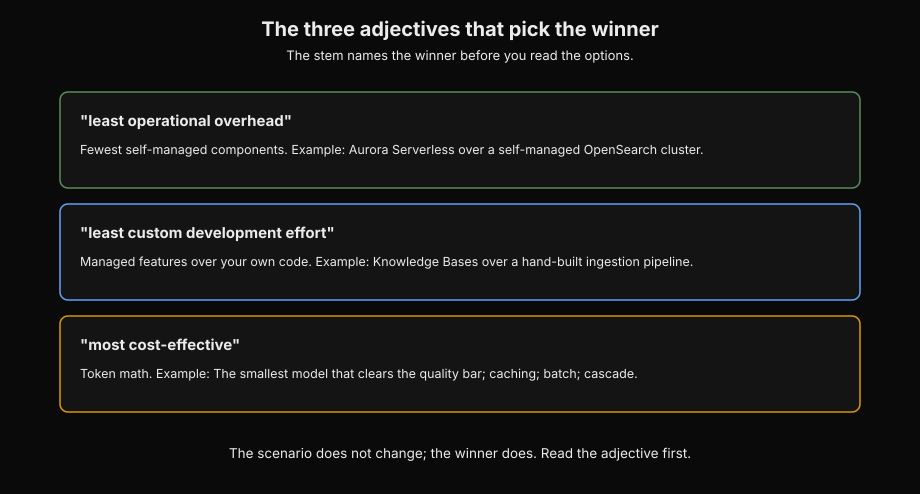
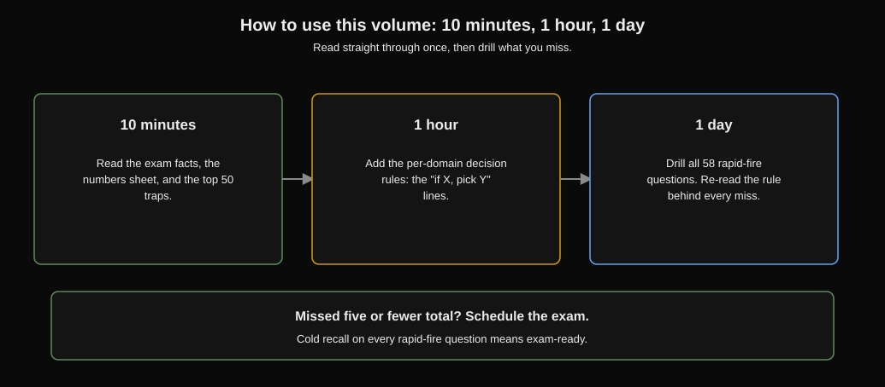
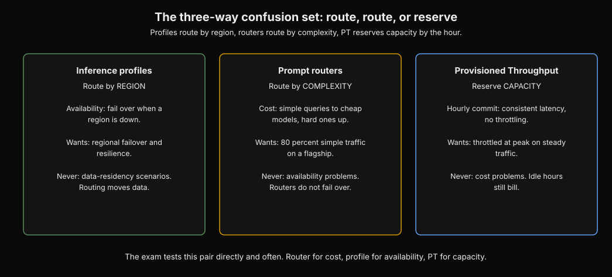
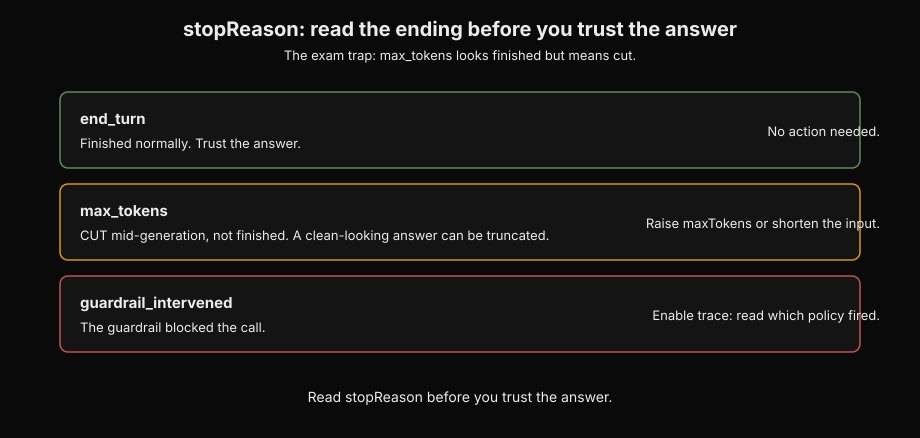
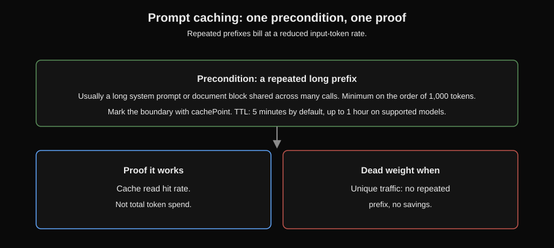
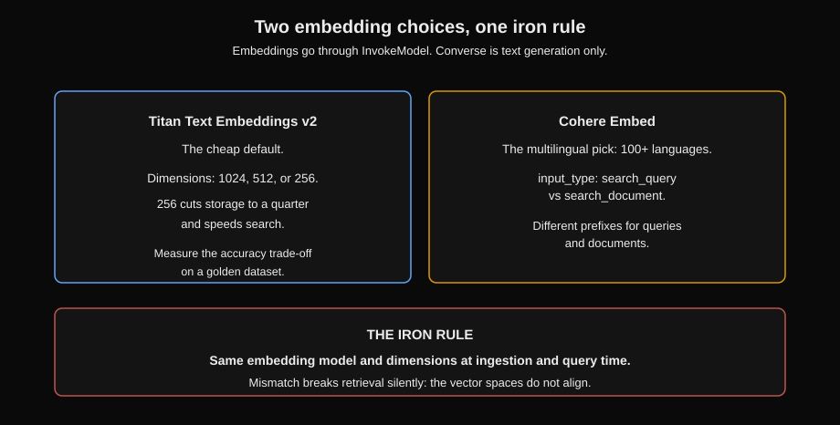
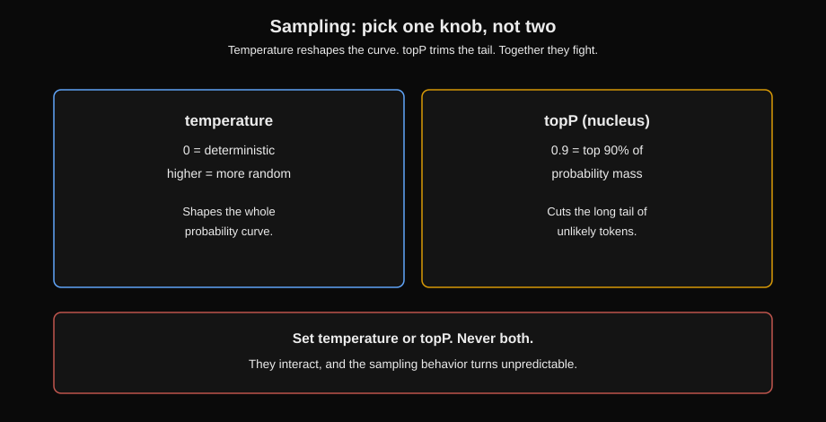
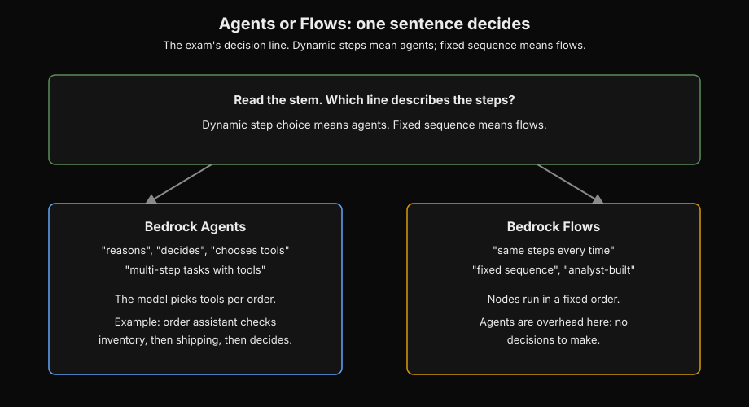
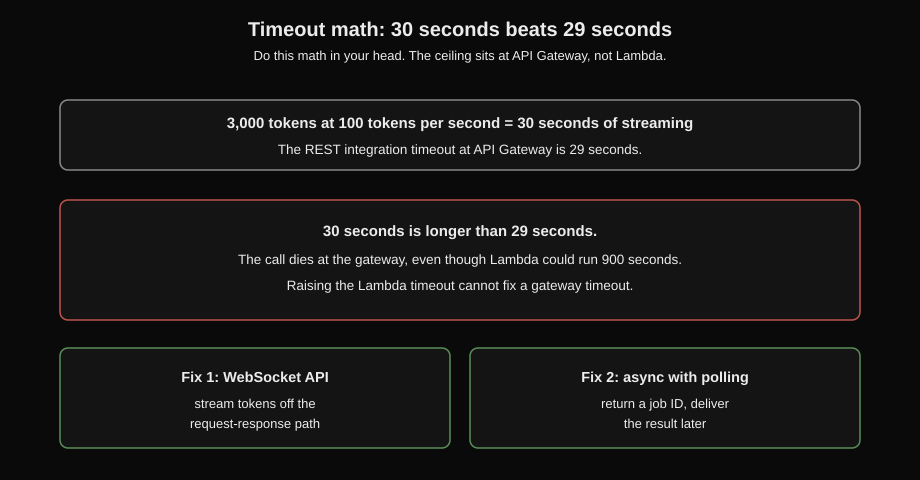
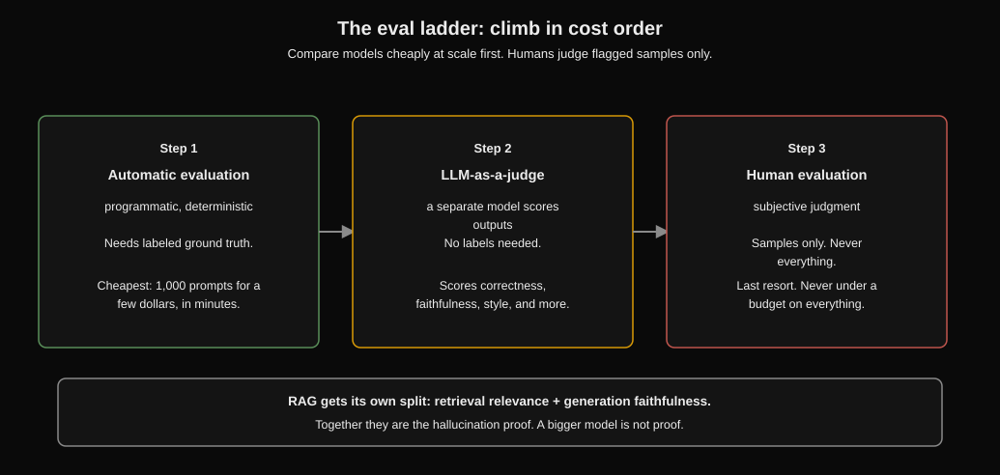

AIP-C01 Crash Course
This book contains the complete exam information. It shows every domain. It shows what you must remember under time pressure. It shows decision rules, numbers, trap patterns, and quick practice questions. Read the book one time. Then use the question sets for each domain.
This helps you practice what you do not know. If you can answer every quick question here, you can answer every exam question.
The exam in 30 seconds

| Fact | Value |
|---|---|
| Questions | 75 total questions (65 scored, 10 not scored). You cannot know which questions count. Treat all questions as scored. |
| Time | 180 minutes. This is about 2.4 minutes for each question. |
| Pass | 750 out of 1000 (scaled score) |
| Cost | $300 |
| Formats | Multiple choice (one answer) and multiple response (select 2 or 3 answers). There is no partial credit. |
| D1 Foundation Models, Data, and Compliance | 31% (about 20 scored questions) |
| D2 Implementation and Integration | 26% (about 17 scored questions) |
| D3 AI Safety, Security, and Governance | 20% (about 13 scored questions) |
| D4 Operational Efficiency and Optimization | 12% (about 8 scored questions) |
| D5 Testing, Validation, and Troubleshooting | 11% (about 7 scored questions) |
The pattern: There is a company scenario with many paragraphs. There are two to four hard requirements. There are four long, possible options. Three options are good ideas in the wrong situation. One option meets every requirement. First, read the scenario for the main requirement.
Then compare the remaining options.
The adjectives in the question decide the answer. "least operational overhead" means the fewest self-managed components. "least custom development effort" means managed features, not your own code. "most cost-effective" means token math. Premium extras always lose if there is no stated need.

How to read this diagram
- Row one: least operational overhead. Count self-managed components.
- Row two: least custom development effort. Pick managed features over your own code.
- Row three: most cost-effective. Do the token math.
How to use this book
- 10 minutes: Read the exam facts above. Read the numbers sheet. Read the top 50 traps.
- 1 hour: Add the decision rules for each domain to your memory. These are the "if X, pick Y" lines.
- 1 day: Practice all 58 quick questions. Then read the rules again for every question you answered wrong. Did you answer five or fewer questions wrong? Schedule the exam.

How to read this diagram
- Pass one: facts and traps. Memorize the numbers sheet.
- Pass two: decision rules. Learn the if-X-pick-Y lines.
- Pass three: rapid-fire questions. Drill until every answer is fast.
This document is a prerequisite map. It shows the three documents that come before this document.

AIP-C01 needs two types of background knowledge. It needs general AWS knowledge and basic AI knowledge. If you do not have this knowledge, read the correct prerequisite document first. This short course does not teach this knowledge again.
- AWS cloud foundations: This document describes the AWS core that AIP-C01 uses. It includes IAM (users, roles, policies, least privilege), S3 (object storage, versioning, event notifications), Lambda (serverless functions), API Gateway (REST and HTTP APIs), VPC (subnets, endpoints, PrivateLink), CloudWatch (metrics, logs, alarms), CloudTrail (API audit), EventBridge, SQS, SNS, and basic Step Functions. You must know these topics very well. The exam uses these services in its answers. It expects you to know their limits. For example, Lambda has a 15-minute limit. The exam does not tell you this limit.
- AI Practitioner (AIF-C01): This document describes the AI knowledge layer. It covers what a foundation model is. It covers tokens and context windows. It covers basic prompt engineering. It covers embeddings as meaning-vectors. It covers fine-tuning versus RAG at a conceptual level. It covers responsible AI vocabulary: bias, fairness, hallucination, toxicity. It covers the AWS AI service map: Bedrock, SageMaker, Comprehend, Rekognition, Transcribe, Textract. This is the vocabulary that the exam uses. Without this vocabulary, the domain documents will seem like jargon.
- ML Specialty primer (MLA-C01): This document describes the deeper ML layer. It is for questions that go beyond GenAI. It includes data preparation and feature engineering, training and tuning concepts, model evaluation metrics (accuracy, precision, recall, F1, ROC), SageMaker training and deployment parts, and ML operations (pipelines, monitoring, drift). AIP-C01 talks about these topics when GenAI meets classic ML. This is mostly in evaluation and data pipeline questions.
Rule: If you can explain IAM least privilege, S3 event notifications, and what an embedding is without stopping, skip the prerequisite documents. Start at D1 below.
D1: Foundation Models, Data & Compliance (31%)
This is the biggest domain. It sets the vocabulary for all later domains. D1 tests three things. It tests which GenAI approach fits the scenario. It tests how to call and feed Bedrock models correctly. It tests how to keep data compliant while you do this.
Almost every question uses the approach ladder plus one API or service detail.
The approach ladder: Climb only when the cheaper step does not work.

A foundation model is a large model. It is pre-trained on much data. You adapt it instead of training it from the start. Amazon Bedrock is the managed AWS service. It provides foundation models from many providers. These providers include Anthropic Claude, Meta Llama, Mistral, Cohere, Amazon Titan and Nova, AI21, and Stability.
It uses one set of APIs. So, you never manage GPUs. The ladder shows the order you try solutions. Start with the cheapest solution first.
Prompt engineering is the bottom step. You change instructions and examples in the prompt. This does not add new knowledge. It does not need training. It does not add new cost. It solves formatting, tone, extraction structure, and simple classification.
RAG (Retrieval-Augmented Generation) is the next step. The model finds facts from your documents when it gives an answer. It cites these facts. It solves private, changing, or cited knowledge. The model was never trained on this knowledge. Agents are next.
The model takes actions through tools. It calls APIs, queries databases, and runs multi-step plans. This step solves anything that needs action, not just an answer. Fine-tuning is the top step. You retrain parts of the model. You use labeled examples.
A new behavior becomes part of the model's weights. It solves stable behavior, tone, and format needs. Prompts cannot reliably keep these.
Rule: Start at the bottom. Climb only when the cheaper step cannot meet a stated need. "Documents change" makes fine-tuning useless. (Weights become old.) "Must cite sources" makes fine-tuning useless. (Weights cannot cite pages.) "Takes actions" makes RAG useless. (Knowledge bases do not call APIs.) "New tone" makes RAG useless.
(Retrieval does not change behavior.) Read the need. Find which step it names. Pick the cheapest step that meets all needs.
Picking the model: filter, then rank

Model selection is a filtering process. It is not a popularity contest. First, filter by capability floor. Run candidate models on a golden dataset. (This is a small set of prompts with good answers.) Remove any model below your quality level. Provider benchmarks never meet this level for you.
They measure the provider's prompts, not yours. Second, filter by regional availability. Bedrock publishes a list of supported models per region. A model in us-east-1 may not exist in eu-west-1. Model access is a one-time console action. Do this for each model and each region.
It costs nothing to enable. Third, rank the remaining models by cost and latency. Measure tokens per request. Measure time to first token on realistic inputs. Fourth, check the context window. (This is the maximum tokens a model accepts in one call.
It is specific to the model. Large models handle hundreds of thousands. Small models handle tens of thousands.) Check it against your longest realistic input plus the expected output. If the input does not fit, you need chunking, summarization, or a bigger window. The model with the lowest cost that meets all criteria wins. Check again every three months.
Prices and capabilities change.
There are two availability tools. Never swap them. Cross-region inference profiles send requests across regions for resilience. If one region throttles or goes down, traffic moves to another. They are the answer to "model X is only in two regions and we need resilience." They do not work with data-residency rules. This is because routing across regions moves data across regions.
Prompt routers (also called model routers) send requests by predicted prompt complexity for cost. Simple queries go to a cheap, small model. Hard queries go to the main model. They are the answer to "80% of our traffic is simple FAQ on an expensive model." Use a router for cost. Use a profile for availability. The exam tests this pair directly and often.

How to read this diagram
- Left: inference profiles. They move traffic between regions for availability.
- Middle: prompt routers. They send simple prompts to cheap models for cost.
- Right: Provisioned Throughput. It reserves capacity. It does not route.
Calling the model: four APIs, one decision
Converse is the unified Bedrock runtime API. It has one request shape. It includes modelId, messages (user and assistant roles), system, inferenceConfig (maxTokens, temperature, topP, stopSequences), optional toolConfig (function definitions), optional guardrailConfig (attaches a Bedrock Guardrail, the content filters and policy checks taught fully in D3, by guardrail identifier plus version, with a trace flag), optional cachePoint (prompt caching marker), and additionalModelRequestFields (the escape hatch for provider-specific extras). It works across providers. It is the default for text generation, tool use, and inline guardrails.
InvokeModel is the original API. You send the provider's raw JSON body. You get the provider's raw response. For Claude, you must include anthropic_version: "bedrock-2023-05-31" and max_tokens. If you do not, the call fails with a validation error. InvokeModel is the ONLY way for embeddings.
This is because Converse is only for text generation. The exam offers Converse as a wrong answer for embedding tasks. It is always wrong.

Reading a Converse response: output.message.content is a list of content blocks. The stopReason field tells you why generation ended. end_turn means the run finished. max_tokens means the output was cut during generation. It did not finish. A good-looking answer with this stop reason is cut short. Increase maxTokens or make the input shorter. guardrail_intervened means the guardrail blocked the call.

How to read this diagram
- Top row: end_turn. The run finished. Trust the answer.
- Middle row: max_tokens. The output was cut. Raise maxTokens or shorten the input.
- Bottom row: guardrail_intervened. The guardrail blocked the call. Check which policy fired.
Latency and cost have their own call shapes. Streaming (ConverseStream, InvokeModelWithResponseStream) returns tokens as the model generates them. It changes how fast it feels, not the total time. A chat that starts answering in less than one second feels fast. This is true even if the full answer takes ten seconds. Streaming is the answer to "users report slow responses" on interactive traffic.
Batch inference is the offline shape. It uses a JSONL file (one JSON object per line) into S3. Results go out to S3. It has hours of latency. It is about 50 percent cheaper per token than on-demand. It is the answer to "cheapest for nightly bulk work with no SLA." Never use it for interactive SLAs.
Async invocation (start_async_invoke) is for a single slow request. One prompt that no one waits for. The result goes to S3. Batch is many prompts from S3. Async is one slow prompt. Streaming sends tokens to a waiting user.

Prompt caching needs one condition. It needs a repeated long prefix. This is usually a long system prompt or document block. Many calls share it. Mark the boundary with cachePoint. Cache hits bill at a lower input-token rate.
The minimum prefix length depends on the model. It is about one thousand tokens. The cache TTL is 5 minutes by default. It can be up to 1 hour on supported models. Unique traffic makes caching useless. No repeated prefix means no savings.
The metric that shows caching works is cache read hit rate. It is not total token spend.

How to read this diagram
- Left: the precondition. A long prefix repeats across calls.
- Middle: the mark. cachePoint tells Bedrock what to cache.
- Right: the proof. Watch cache read hit rate, not total spend.
RAG in depth: This is the most tested pattern in the domain.
RAG uses your documents to ground the model. At ingestion, the system chunks documents into small pieces. Each piece fits the context window. Each piece keeps a tight focus to match precisely. The system converts each chunk to an embedding.
An embedding is a vector of numbers. Similar meanings are close together in this vector. Vectors, text, and metadata go into a vector store. At query time, the system embeds the question with the same model. The store returns the nearest chunks. The model makes an answer and cites the chunks.
An Amazon Bedrock Knowledge Base is the managed version. Point it at data sources. Data sources include S3, web crawlers, Confluence, and SharePoint. Data sources also include Salesforce. It handles chunking, embedding, storage, and sync. RetrieveAndGenerate does the full loop in one call.

Embeddings have two choices for the exam. Amazon Titan Text Embeddings v2 is the low-cost default. It has configurable dimensions: 1024, 512, or 256. Changing from 1024 to 256 reduces vector storage by 75 percent. It also makes search faster. This change has an accuracy trade-off.
You measure this trade-off on a golden dataset. Cohere Embed is the multilingual choice. It supports more than 100 languages. It takes an input_type parameter. This parameter is search_query or search_document. It embeds queries and documents with different prefixes.
These prefixes are good for each role. Embedding calls use InvokeModel. They do not use Converse.
The rule for retrieval is important. Use the same embedding model and dimensions at ingestion and query time. If you do not, retrieval breaks silently. This is because the vector spaces do not align. If answers are confident but wrong after a re-sync, the re-sync changed the embedding model version. Or the re-sync changed the chunking configuration.
Find the change and fix it.
Vector store choice depends on data size. Small datasets, under about 1 million records, use Aurora Serverless with pgvector. This has the fewest self-managed components. It is the answer for "least operational overhead." Large datasets use OpenSearch Serverless. It uses approximate search. This includes HNSW or IVFFlat indexes.

How to read this diagram
- Left: Titan Text Embeddings v2. Pick the dimension count for your cost and quality target.
- Right: Cohere Embed. Use it for multilingual text.
- Bottom rule: the query must use the same model and dimensions as ingest.
These are approximate index types. They trade a small loss in recall for large speedups. "100% recall required on small data" means exact flat search. Approximate indexes trade recall for speed by design. Small data makes the exact scan affordable. Do not embed relational tables into a vector store.
Structured data with SQL-shaped questions uses text-to-SQL against RDS or Aurora. It does not use chunks. Unstructured documents, like PDF, HTML, and Word, belong in the knowledge base.
The exam names two quality upgrades. Hybrid search combines keyword matching with vector similarity. BM25 is the classic keyword-ranking formula. Exact terms and meaning both count. A reranker re-scores the top retrieved chunks. Cohere Rerank on Bedrock is an example.
It uses a stronger model and keeps the best chunks. Together, they answer "retrieval quality is too low and we did the basics." The checklist for silent retrieval problems has three items. First, embedding model mismatch between ingest and query. Second, chunk boundaries that split key facts across chunks. Third, a knowledge base sync that is not in-sync.
Custom models: behavior, not knowledge

Bedrock offers four ways to adapt a model. The exam tests which gap each one fills. Fine-tuning is supervised. It trains on labeled prompt-and-response pairs in S3. It teaches behavior. This includes support tone, classification, and response format.
Useful runs start with hundreds to a few thousand high-quality labeled examples. Quality is more important than quantity. Continued pre-training trains further on unlabeled domain text. It teaches vocabulary and domain knowledge. Distillation trains a small, low-cost student model. It imitates a large teacher model on one narrow task.
It gives near-teacher quality at student cost. This is the answer to "same narrow task millions of times, cost is the problem." Imported models bring weights you customized elsewhere into Bedrock. They serve through Bedrock APIs. On the SageMaker side, the same idea appears as LoRA. LoRA means Low-Rank Adaptation. Train only small weight deltas, called adapters.
Do not train all weights. Then version them in the SageMaker Model Registry with pipelines and rollback.
A fine-tuning job reads training and validation files from S3. It runs for hours. It makes a custom model with its own ARN. ARN means Amazon Resource Name. It is the unique ID of any AWS resource. Serving it usually needs Provisioned Throughput.
This is reserved inference capacity. The next section explains it. An exception is some models, like Nova custom models. They support on-demand. "The customization job succeeded but calls fail" means the custom model has no throughput provisioned. It does not mean bad training data.
The main trap: fine-tuning for knowledge instead of behavior. For quarterly document updates, citations, and fresh facts, use RAG. For tone, format, and stable behavior, use fine-tuning. The exam will make a knowledge problem look like a behavior problem. Read the requirement, not the appearance.
Capacity and cost levers: PT, profiles, routers

Provisioned Throughput (PT) is reserved inference capacity. You buy model units. A model unit is a fixed amount of processing capacity for one model. You buy it for a commitment term. This is commonly 1 month or 6 months. You pay an hourly rate per unit.
You pay whether you use it or not. In return, requests to your provisioned model ARN get dedicated capacity. This means consistent latency. It also means no throttling from shared on-demand quotas. Create it with CreateProvisionedModelThroughput. Invocations must target the returned provisioned model ARN.
They must not target the base model ID. "Bought PT but still throttles" means the code passes the base model ID. It does not pass the provisioned ARN.
PT guarantees latency and capacity for steady production baselines. It is not a discount for spiky traffic. Idle hours still bill. So, bursty workloads stay on on-demand.
There are three confusing items. The exam tests them often. Inference profiles route for availability across regions. Prompt routers route for cost by prompt complexity. Provisioned Throughput reserves capacity by the hour. Regional failover needs a profile.
Simple queries on an expensive flagship model need a router. Throttling at peak on steady traffic needs PT. The exam also tests the cascade pattern for routers. A small classifier sends simple requests to a low-cost, lightweight model. Simple requests include classification, extraction, and short answers. It sends only complex requests to the flagship model.
Right-sizing means choosing the smallest model that meets the quality standard. This is the same idea stated in another way.
Data protection and compliance

Bedrock traffic stays private. It uses VPC interface endpoints. This is PrivateLink. It is for the Bedrock, Bedrock runtime, agent, and agent-runtime APIs. There is no NAT gateway. There is no public internet.
IAM policies define which identities can invoke which model. They also define which knowledge base and agent ARNs. KMS encrypts data at rest. This is envelope encryption with customer-managed keys. TLS encrypts data in transit. Customer data sent to Bedrock is not used to train models.
This is under the service terms. Data you choose to log stays in your account.
The PII pipeline has three services in order. Amazon Macie finds PII at scale in S3. It scans buckets and flags sensitive data before ingestion. Amazon Comprehend detects PII entities in live text in real time. It finds more than 30 entity types. These include names, SSNs, and account numbers.
Bedrock Guardrails sensitive-information filters block or mask PII. This happens at the model boundary. It happens on inputs and outputs. Macie finds it at rest. Comprehend detects it in flight. Guardrails filter it at inference.

How to read this diagram
- Left box: Macie. It finds PII stored in S3 buckets.
- Middle box: Comprehend. It detects PII entities in text you send it.
- Right box: Guardrails. They filter PII at the model boundary.
In scenarios with high compliance, consider if model invocation logging should exist. This is the opt-in record of full prompt and response text. You can route it to S3 or CloudWatch. You can encrypt it with KMS. Logs can contain PII. So, retention policies and redaction are part of the design.
D1 decision rules: if the stem says X, pick Y
- If the stem says "Facts change over time" or "must cite sources," pick RAG with Knowledge Bases. Never use fine-tuning.
- If the stem says "New tone, format, style, behavior," pick fine-tuning or prompt engineering. Never use RAG.
- If the stem says "Take actions," "call APIs," or "multi-step with tools," pick Bedrock Agents. Knowledge bases do not act.
- If the stem says "Unstructured docs (PDF, HTML)," pick Knowledge Bases. If it says "Relational data, SQL questions," pick text-to-SQL on RDS. Never embed tables into a vector store.
- If the stem says "Small vector dataset" (under about 1 million records), pick Aurora Serverless with pgvector. If it says "Large," pick OpenSearch Serverless. If it says "100% recall on small data," pick exact flat search.
- If the stem says "Throttled at peak, steady traffic," pick Provisioned Throughput. Pass the provisioned ARN as modelId. If it says "Spiky or low traffic," pick on-demand.
- Use cross-region inference profiles for regional failover and resilience. This is not possible with data-residency constraints.
- Use a prompt router or cascade for simple queries on an expensive model. Never use Provisioned Throughput for a cost problem.
- Use prompt caching for a repeated long system prompt. Check the cachePoint and the cache read hit rate. Use streaming or a smaller model for unique interactions.
- If users report slow responses, use streaming (ConverseStream) for perceived latency. Provisioned Throughput fixes capacity. It does not fix first-token speed.
- Use batch inference for nightly bulk work with no SLA. Put JSONL into S3. Put results into S3. This saves about 50% of the cost.
- To swap models without redeploying, use a model ID in AppConfig. AppConfig is AWS's runtime configuration service. Read the model ID at runtime. CloudFormation changes are deployments.
- Use InvokeModel for embeddings. Never use Converse. Use the same model and dimensions at ingest and query.
- If answers are confident but wrong after a re-sync, check the embedding model version. Check for chunking drift. Debug the change.
- Use Macie for PII across S3 buckets. Use Comprehend for PII in live text. Use Guardrails to redact at call time.
- Use VPC interface endpoints for no public internet. A NAT gateway does not meet this constraint.
D1 trap patterns
- Use fine-tuning for knowledge. This includes quarterly documents, citations, and new facts. Always use RAG.
- Converse is for text generation only. Do not use Converse for an embeddings task.
- The standalone ApplyGuardrail API covers any text. This includes external models. Guardrails do not work only with Converse.
- Only your own golden-dataset evaluation counts. Do not use provider benchmarks to decide the model choice.
- If you have AccessDenied on InvokeModel, debug it as IAM. First, check model access and regional availability.
- If you miss
anthropic_versionormax_tokensin a Claude InvokeModel body, you will debug IAM for one hour. The error is the request shape. - Do not use a cross-region inference profile under a data-residency constraint. Profiles move data across regions.
- Provisioned Throughput is not a cost fix for bursty traffic. PT bills hourly. It bills whether you use it or not.
- Do not use prompt caching on unique traffic. There is no repeated prefix. There are no savings.
- ElastiCache is ephemeral caching. Do not use ElastiCache as a vector store. Durable vectors live in a vector store.
- Kendra is enterprise search. It is not the RAG path. Do not use Kendra for RAG.
- The stopReason
max_tokensmeans the output was cut. It does not mean "finished." - Set temperature and topP. They interact. Pick one.
D1 rapid-fire questions
D1 · EASY · ONE ANSWER
CC01. A retailer wants a chatbot. The chatbot must answer questions from its 2,000-page returns policy. The policy changes each quarter. Each answer must show the exact section. Which approach do you use first?
Why B is correct: Changing private knowledge and citations is a RAG requirement. Knowledge Bases manage ingestion, chunking, and sync. They do not need training.
The trap: "fine-tune" when documents change. Changing knowledge is always RAG.
D1 · EASY · ONE ANSWER
CC02. 90% of prompts use a 4,000-token system prompt. Costs rise. Which lever do you use?
Why A is correct: A repeated long prefix is the only condition for caching. This question gives you this condition. Proof it works: cache read hit rate.
D1 · MEDIUM · ONE ANSWER
CC03. A team needs embeddings for a knowledge base. Which API do they use?
Why B is correct: Embeddings are a provider-specific feature. So, they go through InvokeModel. Use Titan Text Embeddings v2 (1024/512/256 dimensions) or Cohere Embed (100+ languages, input_type search_query/search_document).
D1 · MEDIUM · ONE ANSWER
CC04. A knowledge base re-syncs. After the re-sync, answers are confident but wrong. Is this a generation or retrieval problem?
Why A is correct: Do change-point debugging. The re-sync changed ingestion. Verify the same embedding model and dimensions at ingest and query. Verify chunk boundaries did not split key facts. Verify the KB status is in-sync.
D1 · MEDIUM · ONE ANSWER
CC05. A model is available in two regions. The application needs resilience. Data must stay in one region. What is the cross-region inference profile?
Why B is correct: Profiles give availability. But every answer must satisfy every constraint. Data residency is a hard constraint. Check the region first.
D1 · EASY · ONE ANSWER
CC06. A vector dataset has 200k records. It needs the least operational overhead. Which store is best?
Why A is correct: Small data plus "least operational overhead" means the fully managed serverless option. Large data means OpenSearch. 100% recall on small data means exact flat search.
D1 · MEDIUM · ONE ANSWER
CC07. A company runs the same narrow classification task millions of times daily. It uses a flagship model. The token bill is the problem. What is the best fix?
Why B is correct: A narrow repeated task at massive scale is the distillation shape. Bake the behavior into a small, cheap model. Serve the predictable baseline on PT. PT has hourly commit, 1 to 6 month terms.
D1 · MEDIUM · ONE ANSWER
CC08. The team bought PT, but on-demand calls still throttle. The code passes the base model ID. How do you fix this?
Why A is correct: PT capacity is only used when invocations target the provisioned ARN. The base model ID keeps hitting shared on-demand quotas.
D1 · EASY · ONE ANSWER
CC09. A fine-tuned model's customization job succeeded. But every invoke call fails. What do you check first?
Why A is correct: This is the serving problem. Most custom models need Provisioned Throughput. Then you can invoke them. The base model ID will not serve them.
D1 · MEDIUM · ONE ANSWER
CC10. Compliance wants to find PII in many S3 buckets. This must happen before KB ingestion. Which service do you use?
Why B is correct: This is the PII pipeline order. Macie finds PII in S3 at rest. Comprehend finds PII in live text. Guardrails filter PII at inference time.
D1 · MEDIUM · ONE ANSWER
CC11. A support team answers questions. The questions come from a relational orders database. An example question is "which orders shipped late last week?". Do you embed the tables into a vector store?
Why B is correct: Unstructured documents go to the knowledge base. Relational data uses text-to-SQL. Match the retrieval method to the data shape.
D1 · MEDIUM · ONE ANSWER
CC12. Basic RAG works. Retrieval quality is too low. Which two upgrades does the exam name?
Why A is correct: Hybrid search finds exact terms that pure vectors miss. The reranker re-scores top chunks with a stronger model. Bedrock manages both features. They are the "least custom effort" answer.
D1 · EASY · RECALL
CC13. A Converse response shows stopReason max_tokens. The answer looks clean. What happened?
Answer: The output was cut during generation. It did not finish. Increase maxTokens or make the input shorter. The other values are: end_turn (done), guardrail_intervened (blocked).
D1 · EASY · RECALL
CC14. You set Temperature to 0.7 and topP to 0.9 on a Converse call. Is this correct?
Answer: No. They interact. Sampling behavior becomes unpredictable. Set temperature or topP. Do not set both. Temperature 0 is the deterministic setting.

How to read this diagram
- Left: temperature. It controls randomness. Zero means deterministic.
- Right: topP. It controls the token pool. Use one control only.
- Bottom: the trap. Setting both makes sampling unpredictable.
Next: D2 takes those model calls. It turns them into a working application. This application has agents that act. It has workflows that orchestrate. It has APIs that face users.
D2: Implementation and Integration (26%)
D1 teaches you how to choose an approach. D1 teaches you how to call a model. D2 answers the next question. How do these calls become a working application?
D2 is the build domain. This domain includes agents that act. It includes workflows that orchestrate. It includes APIs that face users. It includes prompts that you treat as code. The exam often shows a failure mode here.
This is when you pick a dynamic tool for a fixed sequence. Or you pick a fixed sequence when the job needs reasoning. Learn the difference between an agent and a flow. Learn the timeout math. Then most of D2 is clear.
Bedrock Agents: when the model decides the steps
A Bedrock Agent is a foundation model. It has instructions. It has action groups. Action groups are tool definitions. Lambda functions or API schemas support these definitions. The agent reasons about a goal.
It decides which tools to call. It decides the order of the calls. It continues until the task is complete. Use agents when the scenario says the model reasons. Use agents when it says the model decides. Use agents when it says the model chooses tools.
Use agents for multi-step tasks with tools. This is the agent loop: Your application calls invoke_agent. It calls this on the bedrock-agent-runtime API. It uses agentId.
It uses agentAliasId. It uses sessionId. It uses inputText. The agent adds its instruction. It adds the conversation history for that session. It asks the model for the next step.
It executes tool calls. It repeats this process.

The exam tests four details. First, aliases: agentAliasId must point to the PROD alias for production. The agent ID alone routes to DRAFT. This is a common bug. It causes "production uses the wrong behavior." Second, PrepareAgent: You must run prepare-agent after any configuration change. This includes a new action group or a new instruction.
This compiles DRAFT into a prepared version. If you skip this, the agent silently runs the old configuration. "Agent ignores the new action group" always means you skipped prepare. Third, sessionId is the conversation memory key. Use one session ID per user session. Reusing one ID across users shares conversation history between them.
Fourth, enableTrace on invoke_agent returns the reasoning trace. This trace shows which tools the agent chose. It shows why the agent chose them. It is the exam's transparency answer. "Show why the agent did that" is always enableTrace.
The Lambda action function has a fixed contract. Both sides must follow this contract. Parameters arrive as a LIST of {"name": ..., "value": ...} dictionaries. They do not arrive as a plain dictionary. If you treat it as a dictionary, you lose every parameter. The response must echo the exact nested shape.
It must include messageVersion. It must include actionGroup. It must include function. The result string must be inside responseBody.TEXT.body. If the shape is wrong, the agent cannot parse the tool result. For multi-tenant agents, the supervisor pattern routes to collaborator agents.
IAM filtering for each knowledge base ensures this. Tenants only reach their own data.
Bedrock Flows: when the steps are fixed

A Bedrock Flow is a deterministic prompt chain. It is a fixed sequence of model calls. It includes Lambda functions. It includes knowledge base lookups. The flow connects them as nodes. It runs the same steps every time.
Use flows when the scenario says same steps every time. Use flows when it says fixed sequence. Use flows when it says analyst-built. Use flows when it says no-code chain. Agents are extra work here. You pay a reasoning model to decide steps.
These steps never change. The exam's decision line is one sentence. Dynamic step choice means agents. Fixed sequence means flows.

How to read this diagram
- Left path: the model chooses the next step each time. Use Bedrock Agents.
- Right path: the steps never change. Use Bedrock Flows.
Watch for invented features in options. Flows do not have an S3 copy node. Flows do not have invented action nodes. Check node lists before you choose.
Orchestration and the timeout math
GenAI work is rarely one call. A pipeline classifies data. It extracts data. It validates data. It waits for human review. Then it publishes data.

How to read this diagram
- Top: the math. Tokens divided by tokens per second gives seconds.
- Middle: the limit. API Gateway allows 29 seconds per call.
- Bottom: the fix. Stream the answer, or move the slow work to an async path.
A Lambda trying to do that hits its 15-minute (900-second) ceiling. It has no durable memory of its state if it crashes. Step Functions keeps execution state durably. It retries with backoff. It can pause. There are two types.
Never swap them. Standard runs up to 1 year. It costs about $0.025 for 1,000 state transitions. It supports wait-for-callback. A task token lets the workflow pause indefinitely. This is for human approval.
Then it resumes exactly where it stopped. The wait itself is free. Express is for short, high-volume flows. It has a 5-minute maximum duration. It has no callbacks. "Approval takes hours" is always Standard with wait-for-callback.
Express cannot pause.

For parallel bulk work, Distributed Map sends work to up to 10,000 parallel child executions. These executions work on S3 objects. This is the answer to "process 10k objects in a tight window." Sequential processing fails on time. Plain Lambda fan-out fails on orchestration overhead. You must do timeout math in your head. A REST API Gateway in front of a Lambda has a 29-second integration timeout.
A model streams 100 tokens per second. A 3,000-token answer takes 30 seconds. So a synchronous call through the gateway fails. This happens even if Lambda itself can run for 15 minutes. The fix is asynchronous. Return a job ID.
Poll or push the result. Or use WebSocket streaming.
Worked example: the timeout math
Streaming speed: 100 tokens per second. Answer size: 3,000 tokens. Time = 3,000 / 100 = 30 seconds. API Gateway REST integration timeout: 29 seconds. 30 is greater than 29. So the call fails at the gateway.
This happens even though the Lambda behind it can run for 900 seconds. The fix moves off the request-response path. Use WebSockets. Or use asynchronous with polling.
The API front door and async patterns

API Gateway is the stable endpoint in front of Bedrock. It provides one URL. It provides authentication. It provides throttling. It provides usage plans. The model behind it can change.
Direct SDK calls win only when latency is critical. They win when no authentication is necessary. For streaming, use WebSocket APIs. Use an Application Load Balancer. This load balancer spreads incoming HTTP traffic across targets. Or use Lambda function URLs.
REST endpoints have the 29-second limit. They do not fit long streams. The asynchronous single-request pattern is start_async_invoke. The call returns an invocation ARN. The result lands in S3. The exam's three-way split: Batch is many prompts from S3.
Asynchronous is one slow prompt. No one waits for this prompt. Streaming sends tokens to a waiting user. Spiky traffic gets SQS buffering. It also gets reserved concurrency for the critical function.
Prompts as code: Prompt Management and AppConfig

Prompts are code. They get versions. Bedrock Prompt Management stores prompt templates. These templates carry versions. They have variants. You can test two versions together.
They have variables. You fill these placeholders when the system runs. This answers the question: "15 prompts, marketing changes tone each week, no redeploys." Marketing edits a draft variant. Marketing tests it with a golden set. Marketing publishes a new version. There are zero engineering redeploys.
There is a full audit trail. "Versioned prompt templates reused across flows" is always Prompt Management. It is not DynamoDB. It is not environment variables. For runtime model switching without redeploys, use three tools. Use AppConfig.
It provides the model ID as runtime configuration. Use Lambda for routing. Use API Gateway for a stable URL. A CloudFormation change is a deployment. It always breaks the "no redeploy" rule.
D2 decision rules: if the stem says X, pick Y
- "Reasons, decides steps, chooses tools" means Bedrock Agents. Use action groups and Lambda.
- "Fixed sequence, same steps every time" means Bedrock Flows. Agents are extra work.
invoke_agentneedsagentId. It needsagentAliasId. This must be PROD, never DRAFT. It needssessionId. Use one per user. It needsinputText. It returns a stream. You iterate this stream.- The agent does not use the new action group. The team skipped PrepareAgent.
- Show why the agent did that. Use
enableTrace=true. - Lambda action function: parameters arrive as a LIST of name/value dictionaries. The response shows the nested shape. The result is in
responseBody.TEXT.body. - The task runs longer than 15 minutes. Use Step Functions, not Lambda.
- Human approval takes hours. Use Step Functions Standard with wait-for-callback. Express has a 5-minute limit. Express cannot pause.
- Process 10,000 S3 objects in a short time. Use Distributed Map. It can run up to 10,000 parallel children.
- Streaming answers time out. Use WebSockets or async with polling. Do not use a bigger Lambda timeout. The 29-second limit is at API Gateway.
- You need a stable URL, authentication, and throttling. Use API Gateway and Lambda. Use direct SDK only if latency is very important and you do not need authentication.
- You need versioned prompt templates. You do not want redeploys. Use Prompt Management. You want to swap models without redeploying. Use AppConfig.
- You need a quality gate before you deploy. Use Bedrock evaluation jobs in the pipeline. Deploy only if the score is above the threshold.
D2 trap patterns
- Lambda waits, sleeps, or polls for more than 15 minutes. It stops.
- The Agent ID is alone in production. It routes to DRAFT instead of the PROD alias.
- The app shares one sessionId across users. This leaks conversation memory.
- Do not use Express for human waits that take hours. It has a 5-minute limit. It has no callbacks.
- Do not raise the Lambda timeout for gateway timeouts. The 29-second limit is at API Gateway.
- Do not use Fabricated Flow nodes (S3 copy node). Check the node and feature lists.
- Do not use CloudFormation for runtime switching. Configuration changes are deployments. AppConfig is for runtime.
- Do not use Agents for fixed sequences. Reasoning overhead has no benefit.
- Do not use multi-tenant agents without per-KB IAM filtering. Tenants must not reach each other's data.
D2 rapid-fire questions
D2 · EASY · ONE ANSWER
CC15. An order assistant must check inventory with an API. It must check shipping with another API. Then it must tell the customer. The steps change for each order. Should you use Agents or Flows?
Why A is correct: The steps change. The system must make a decision. The system uses many tools. The dynamic-step line points to agents. Fixed steps always point to Flows.
D2 · EASY · ONE ANSWER
CC16. The invoke_agent command must use the PROD deployment. It must not use the draft. Which parameter must it use?
Why B is correct: The alias selects the deployment. The full call shape is: agentId + agentAliasId + sessionId + inputText. The response is a stream. You iterate the stream.
D2 · MEDIUM · ONE ANSWER
CC17. An agent does not use a new action group. What is the first check?
Why A is correct: If you skip prepare-agent, the agent uses the old configuration. "The configuration changed but the behavior did not" means you skipped 'prepare'.
D2 · EASY · ONE ANSWER
CC18. A Lambda action function receives event["parameters"]. What is its shape?
Why B is correct: This is the fixed contract. The response must repeat messageVersion, actionGroup, and function. It must include the result string in responseBody.TEXT.body.
D2 · EASY · ONE ANSWER
CC19. A claim pipeline must stop for manager approval. This takes 6 hours on average. Then it must start again. Which orchestration must you use?
Why B is correct: You need Standard's task-token callback for waits that are many hours long. It runs for up to 1 year. The wait itself costs nothing. Express is for short, high-volume flows.
D2 · MEDIUM · ONE ANSWER
CC20. A chatbot streams answers. This can take 90 seconds. Users see timeouts behind a REST API. How do you fix this?
Why B is correct: The timeout math shows this. 90 seconds is more than the 29-second REST integration timeout. The stream must move off the request-response path.
D2 · MEDIUM · ONE ANSWER
CC21. You must process 10,000 S3 objects in 30 minutes. Which pattern do you use?
Why A is correct: The Distributed Map shape handles a tight time limit over many objects. Find the killer constraint (the clock). Then compare the remaining options.
D2 · MEDIUM · ONE ANSWER
CC22. Marketing changes the prompt tone every week. Engineering cannot redeploy the application. Which service do you use?
Why B is correct: "versioned prompt templates reused without redeploys" is the Prompt Management sentence. AppConfig answers "swap models without redeploying."
D2 · EASY · RECALL
CC23. A support bot uses one sessionId for all users. What breaks?
Answer: Conversation memory leaks between users. The session ID is the memory key. Use one ID per user session.
D2 · EASY · RECALL
CC24. Compliance asks "show why the agent called that tool." Which flag do you use?
Answer: Use enableTrace=true on invoke_agent. It returns the reasoning trace. This trace shows which tools the agent chose and why.
D2 · MEDIUM · ONE ANSWER
CC25. One document-generation request takes 4 minutes. Nobody waits for it. Which call shape do you use?
Why B is correct: This is the three-way split. Batch inference uses many prompts. Async inference uses one slow prompt that nobody waits for. Streaming sends tokens to a waiting user.
D2 · MEDIUM · ONE ANSWER
CC26. Switch between Claude, Titan, and Llama without client redeploys. Which trio?
Why A is correct: The gateway URL stays fixed. The Lambda reads the model ID from AppConfig at runtime. CloudFormation is always the "redeploy" distractor.
Next: D3 guards what D2 built. It uses guardrails at the model door. It uses IAM at every account. It uses the audit trail that proves it.
D3: AI Safety, Security & Governance (20%)
D2 built the application. D3 guards the application. A working application can leak data. It can answer attacks. It cannot prove who did what. This is a failed application.
D3 tests the bouncer, the locks, and the audit trail. Guardrails filter content at the model boundary. IAM and organization controls decide who can touch what. CloudTrail, CloudWatch, and invocation logging record what happened at three different depths. The exam often offers a real service with an invented capability. Learn exactly what each control can and cannot do.
Guardrails: the bouncer at the model door
A Bedrock Guardrail is a named configuration. It holds your safety rules. Every request and every response passes it. There are six policies. You can switch each policy independently. These policies are: content filters, denied topics, word filters, sensitive information filters (PII detection and redaction), contextual grounding checks, and Automated Reasoning checks.
Attach it inline to a Converse call with guardrailConfig. This includes the guardrail identifier and version. It also has a trace flag that shows what fired. Or, apply it to any text with the standalone ApplyGuardrail API. This is the answer when the scenario says "we call an external model but need AWS guardrails."

Content filters are the toxicity screen. There are six fixed AWS-defined categories. These are hate, insults, sexual, violence, misconduct, and prompt attack. Each category has four sensitivity strengths. This means 24 independent settings per guardrail. Prompt attack is the category that catches jailbreaks.
This includes "ignore all previous instructions." It also catches injections smuggled through pasted documents or tool outputs. The guardrail evaluates it on inputs, where attacks arrive. Denied topics block named subjects on both inputs and outputs. "Block bullying topics" is a denied topic. "Notify on bullying but never block" is the same filter. It runs in a monitor mode.
This mode logs intervene events instead of blocking. Word filters block exact strings. This includes profanity lists and custom terms. Sensitive information filters detect and redact PII.
The two verifiers catch two different lies. Contextual grounding checks ask whether the source text supports the answer. This is the hallucination check for RAG. Automated Reasoning checks translate the response and your policy into formal logic. They prove if the response obeys the policy. This is the strongest guarantee in the guardrail set.
It is the answer to "most mathematically certain that outputs obey policy." Note its limit: Automated Reasoning checks run in detect mode only. They return findings (valid, invalid, ambiguous, too complex) instead of blocking inline.
What guardrails can never do

Guardrails filter content. They cannot do IAM. IAM decides who may call the model. They cannot do tenant isolation. Tenant isolation decides which data a tenant may reach. They cannot do token quotas or billing.
They cannot do data extraction. An option says "use Guardrails to limit each tenant to 1,000 tokens per day." This is a fabricated feature. It is a real service with an invented capability. Tenant isolation is per-knowledge-base IAM filtering. Quotas are API Gateway usage plans. Access control is IAM.
Read every guardrail option for scope creep.
Identity and access: who can touch the model

IAM is the first lock. It uses least-privilege policies. These policies scope which identities can invoke which model, knowledge base, and agent ARNs. They also scope which regions. Above IAM are the organization controls. Service Control Policies (SCPs) set organization-wide maximum permissions.
These apply across accounts in AWS Organizations. This is the answer to "restrict model access across 40 accounts." Deploy them at scale with StackSets. StackSets are multi-account deployments of CloudFormation templates. This prevents account drift. Permissions boundaries cap what a single role can ever receive. This is the per-role answer.
The exam pairs them as: SCPs bound the organization. Boundaries bound the role. IAM grants the actual access inside those bounds. "Built-in alignment is enough" is always wrong. The model provider's safety work never transfers evaluation and governance to you. The deployer owns both.
Observability: three logs, three depths

CloudTrail is the audit plane. It records who called which Bedrock API. It records when, from where, and if it succeeded. It records API metadata only. It never records prompt or response content. Event history keeps 90 days.
Longer retention means delivering the trail to S3. "Who invoked which model at 2am" is always CloudTrail. CloudWatch is the operations plane. It has metrics and alarms on what happens now. It shows which prompts the guardrail blocked and why. It shows guardrail block rates, token counts, and throttling.
Use CloudWatch metrics and custom alarms. "Proactively alert" kills every reactive option. Count tokens before the call with client-side estimation. The InputTokenCount metric fires after the call runs. Model invocation logging is the content plane. It is the opt-in record of full prompt and response text.
It goes to S3 or CloudWatch. It is KMS-encryptable. It is the only source for "show us the exact blocked prompt." In regulated scenarios, you must justify keeping it at all. Use retention policies and redaction. Logs can contain PII.
Network and data protection

"Bedrock with no public internet" is always VPC interface endpoints (PrivateLink) for the Bedrock APIs. Use Lambda in private subnets. A NAT gateway gives public internet access. This violates the constraint. At rest is KMS. Use customer-managed keys, envelope encryption.
Log every key use. In transit is TLS. Customer data sent to Bedrock is not used to train models under the service terms. Any data you log stays in your account. For human oversight of risky model outputs, A2I (Augmented AI) puts flagged interactions in front of human reviewers. This is for critical flagged cases only.
It is never for all traffic.
D3 decision rules: if the stem says X, pick Y
- If the content is bad, notify. Do not block it. Use a guardrail in monitor mode with intervene metrics. Block mode does not meet the constraint.
- Block specific topics. Block them in inputs and outputs. Use a denied topics policy on inputs and outputs.
- Jailbreaks and prompt injections are content filter category prompt attacks. Evaluate them on inputs.
- The most mathematically certain outputs obey policy. Automated Reasoning checks this. It uses detect mode and formal logic.
- Is the source supporting the answer? Use a contextual grounding check. Does the answer obey the policy? Use Automated Reasoning. There are two verifiers. There are two lies.
- You use an external model. You need AWS guardrails. Use ApplyGuardrail standalone. guardrailConfig cannot reach outside Bedrock.
- Who called which model and when? Use CloudTrail. Which prompts did the system block and why? Use CloudWatch. For full prompt and response text, use model invocation logging. This is an opt-in feature.
- Alert before limits. Count tokens before the call. Metrics fire after the call.
- Restrict models across the whole organization. Use SCPs. Use StackSets for deployment. Cap one role. Use permissions boundaries.
- Use Bedrock with no public internet. Use interface VPC endpoints. A NAT gateway does not meet the constraint.
- Critical flagged interactions need human review. Use A2I. Not all traffic needs review.
- Customer data must not train models. Follow the service terms and opt-out. Invocation log data stays in your account.
D3 trap patterns
- Guardrails are not for IAM, tenant isolation, token quotas, or billing. This is a fabricated capability.
- CloudTrail is not for prompt content. It provides metadata only. Content needs invocation logging.
- CloudWatch is not for "who called what." CloudTrail does this job.
- Built-in safety does not mean you skip evaluation. The deployer owns evaluation and governance. Always evaluate.
- Do not attach a guardrail to a CloudWatch log group to mask PHI. Guardrails attach to Bedrock model flows. They do not attach to log groups.
- A NAT gateway is not for "no public internet." It provides public internet access.
- Check the region first for cross-region data residency issues.
- You have full invocation logging in a healthcare scenario. There is no retention policy. Logs can contain PII. Question the logging itself.
- Automated Reasoning does not block inline. It runs in detect mode only.
D3 rapid-fire questions
D3 · EASY · ONE ANSWER
CC27. You must block bullying topics in prompts and answers. You must notify on bullying but never block. What changes?
Why B is correct: "notify but do not block" is the monitor-mode sentence. Block mode does not meet the stated constraint.
D3 · MEDIUM · ONE ANSWER
CC28. Compliance needs the full prompt and response text for blocked calls. Which log stores this?
Why B is correct: There are three depths. CloudTrail shows who, what, and when. CloudWatch shows what happens now. Invocation logging shows the content. Only B stores the actual text.
D3 · MEDIUM · ONE ANSWER
CC29. Restrict foundation model access across 40 AWS accounts. Prevent drift. Which control do you use?
Why A is correct: SCPs set the org-wide maximum. StackSets deploy them at scale. Permissions boundaries cap a single role. They do not cap the organization.
D3 · EASY · ONE ANSWER
CC30. Bedrock must run in a VPC. It must have no public internet. Which networking do you use?
Why B is correct: Interface endpoints keep traffic on the AWS network. They have no internet path. "No public internet" always means endpoints. It never means NAT.
D3 · MEDIUM · ONE ANSWER
CC31. The team calls an external model. This model is not a Bedrock model. Compliance needs AWS guardrails on its outputs. How do you do this?
Why B is correct: ApplyGuardrail applies guardrail policies to any text. This includes non-Bedrock output. This is the exam's favorite guardrail scope trap.
D3 · MEDIUM · ONE ANSWER
CC32. A financial advice bot must have outputs that obey policy. This must be mathematically certain. Which check do you use?
Why B is correct: Formal logic verification is the strongest guarantee in the guardrail set. Note its limit: detect mode only. It returns findings. It does not block inline.
D3 · MEDIUM · ONE ANSWER
CC33. Protect PII in customer-service GenAI conversations. Use minimal custom work. Select the set.
Why A is correct: This is the pipeline order. Macie finds PII in the lake before ingestion. Comprehend detects PII in live text. Guardrails filter PII at the model boundary.
D3 · EASY · RECALL
CC34. Name the six guardrail policies.
Answer: content filters, denied topics, word filters, sensitive information filters, contextual grounding checks, Automated Reasoning checks. Content filters alone have 24 settings. This is 6 categories times 4 strengths.
D3 · EASY · RECALL
CC35. CloudTrail event history keeps how many days? What does CloudTrail never record?
Answer: 90 days. Deliver the trail to S3 for longer storage. It never records prompt or response content. It only records API metadata.
D3 · MEDIUM · ONE ANSWER
CC36. An option says "use Guardrails to cap each tenant at 1,000 tokens per day." What is the verdict?
Why A is correct: This is the scope trap. It is a real service plus an invented capability. Guardrails never do IAM, tenant isolation, token quotas, or billing.
D3 · MEDIUM · ONE ANSWER
CC37. "Proactively alert before token limits are hit." Alarm on the InputTokenCount metric or count tokens before the call?
Why B is correct: Proactive means before the call. Token math happens client-side, ahead of time. This includes input plus output tokens times price.
D3 · EASY · RECALL
CC38. At rest is KMS. In transit is TLS. A healthcare scenario enables full invocation logging. There is no retention policy. What is wrong?
Answer: Logs can contain PII/PHI. The design needs retention policies and redaction. Or, it needs a justification to disable logging. The exam expects you to question the logging itself in regulated scenarios.
Next: D4 makes the guarded application cheap and fast. It uses token math, caching, batch, Provisioned Throughput, and timeout math. This kills synchronous designs.
D4: Operational Efficiency and Optimization (12%)
D3 made the application safe. D4 makes the application cheap and fast. Safety is not important if the cost or the latency kills the project.
D4 is the smallest scored domain. It has the most decision rules. Each question is a cost, latency, or capacity scenario. The adjective in the question names the correct answer before you read the options. Learn the three adjectives and the three-way routing confusion set. Then D4 gives you free points.
The three adjectives, three different winners
"Least operational overhead" means the fewest self-managed components. Use Aurora Serverless instead of a self-managed OpenSearch cluster. Use Converse instead of hand-rolled provider bodies. Use managed routers instead of your Lambda code. "Least custom development effort" means managed features instead of your own code. Use Knowledge Bases instead of a hand-built ingestion pipeline.
Use prompt routers instead of your classifier Lambda. Use Guardrails instead of hand-rolled filters. "Most cost-effective" means token math. Use the smallest model that meets the quality standard. Use caching for repeated prefixes. Use batch for offline bulk.
Use cascading simple queries to cheap models. The exam changes these adjectives for the same scenarios. The scenario does not change. The correct answer changes.

The levers in cost order

Right-sizing and cascading are first. They reduce every token. Select the smallest model that meets the quality standard on your golden dataset. Then automate it. A router or cascade sends simple requests to a cheap, lightweight model. These requests are for classification, extraction, and short answers.
It sends only complex requests to the flagship model. Prompt caching is next for repeated long prefixes. Mark the shared block with cachePoint. Pay the reduced input-token rate on hits. Prove this with the cache read hit rate. Batch inference handles offline bulk.
Put JSONL into S3. Put results to S3. This has hours of latency. It is about 50 percent off on-demand. Provisioned Throughput is last in cost order. It is first in capacity order.
It uses model units on 1 or 6 month terms. It has hourly billing, whether you use it or not. It routes invocations to the provisioned ARN. It guarantees latency. It stops throttling on steady baselines. On spiky traffic, it bills you for sleeping hours.
So spiky traffic stays on-demand.
TOKEN MATH (do this before the call, not after)
cost = (input_tokens + output_tokens) x price_per_token
cache hit: input_tokens x cached_rate (reduced rate on the repeated prefix)
batch: cost x ~0.5 (offline only, hours of latency)
PT: model_units x hourly_rate x hours in term (used or not)
Estimate per request, multiply by volume, compare options.
"Proactive" cost control means this math happens client-side.Worked example: token math on one million requests
A chatbot handles 1,000,000 requests each month. Each request has 2,000 input tokens and 500 output tokens on average. Use these illustrative prices: $3 per million input tokens, $15 per million output tokens.
On-demand cost per request: input part = 2,000 / 1,000,000 x $3 = $0.006. Output part = 500 / 1,000,000 x $15 = $0.0075. Total per request = $0.0135. Monthly = $0.0135 x 1,000,000 = $13,500.
Batch inference is about 50% off: $13,500 x 0.5 = $6,750 each month. This is only if no one waits for the answers. That "roughly half" is the whole batch argument.
Prompt caching: 1,800 of the 2,000 input tokens are a repeated system prompt. Cache hits bill at one-tenth the rate ($0.30 per million). The input part drops to (200 / 1,000,000 x $3) + (1,800 / 1,000,000 x $0.30) = $0.0006 + $0.00054 = $0.00114 per request. The answers are the same. The input cost is about one-sixth. The precondition is real.
The prefix must repeat.
Streaming is the latency lever. It is not a cost lever. ConverseStream reduces perceived latency to the first token. This is often less than one second. Total generation time does not change. "Users report slow responses" on interactive traffic is always streaming.
PT does not speed the first token. Caching needs repeated prefixes. For throttling, the fix ladder is: retry with backoff for transient throttles. Use PT for sustained throttles on steady traffic. Use routers to shed load to cheaper models. Use profiles to spread across regions.
"Bought PT but still throttles" means the code passes the base model ID. It does not pass the provisioned ARN.
The confusion set one more time. The exam tests it directly. Inference profiles route by region for availability. Prompt routers route by complexity for cost. Provisioned Throughput reserves capacity by the hour. Regional failover needs a profile.
Simple queries on an expensive flagship need a router. Throttled at peak on steady traffic needs PT. If you mix them up, the distractor wins.
D4 decision rules: if the question says X, pick Y
- "Least operational overhead" means the fewest self-managed components. "Least custom development effort" means managed features. "Most cost-effective" means token math.
- "Throttled at peak, steady traffic" means Provisioned Throughput (provisioned ARN as modelId). "Spiky or low traffic" means on-demand.
- "80% simple queries on the flagship" means a prompt router or cascade. Never use PT for a cost problem.
- "Repeated long prefix" means prompt caching. Proof is cache read hit rate. "Unique traffic" means caching is dead weight.
- "Nightly bulk, no SLA" means batch inference (about 50% off). Never use it for interactive SLAs.
- "Slow first token, users complain" means streaming. Not PT, not caching.
- Use inference profiles for regional failover. Use prompt routers for cost by complexity. Do not swap them.
- Choose the cheapest option that meets all requirements. Do not choose premium extras with no stated need.
D4 trap patterns
- Use Provisioned Throughput (PT) to fix cost for bursty traffic. PT bills hourly. It bills even if you do not use it.
- Use PT to fix latency for slow first token. Capacity is not perceived latency.
- Use prompt routers for availability. Use inference profiles for cost. The options swap the pair.
- Cache unique traffic. If there is no repeated prefix, there is no saving.
- Batch for interactive Service Level Agreements (SLAs). Hours of latency breaks the SLA.
- Total token spend shows if caching works. The metric is cache read hit rate.
- Use a bigger model as the quality answer. Do not do this without a golden-dataset check. Right-size first.
- Use reactive metrics for proactive requirements. Count before the call.
D4 rapid-fire questions
D4 · MEDIUM · ONE ANSWER
CC39. Token costs increase. 80% of requests are simple FAQ lookups on the flagship model. Quality must not decrease. What is the best fix?
Why B is correct: The problem is "simple queries on an expensive model." Routers route by complexity for cost. A lightweight model scores the same on simple extraction. This model is the correct size. It does not have lower quality.
D4 · MEDIUM · ONE ANSWER
CC40. Steady production traffic throttles at peak on on-demand. What is the fix? What is the routing problem?
Why A is correct: Steady plus throttled is the PT shape. (model units, 1 to 6 month terms, hourly billing). The ARN is important. Reserved capacity only serves traffic addressed to it.
D4 · EASY · ONE ANSWER
CC41. "Cheapest for nightly 500k-row classification, no SLA." Which inference?
Why B is correct: There is no SLA. Bulk processing is batch processing. Hours of latency is acceptable. The 50% cost reduction is important.
D4 · MEDIUM · ONE ANSWER
CC42. Users report slow responses on unique interactive queries. Should you use streaming, PT, or caching?
Why A is correct: "Slow responses" on interactive traffic is perceived latency. Streaming is the only way to change first-token time.
D4 · MEDIUM · ONE ANSWER
CC43. A scenario needs regional failover and cost-based routing. Which combination is correct?
Why A is correct: The confusion set is complete. Use the router for cost. Use the profile for availability. Stack them together. PT would answer a capacity question that no one asked.
D4 · EASY · RECALL
CC44. Which metric shows that prompt caching works?
Answer: The cache read hit rate. Total token spend changes for many reasons. The hit rate shows only the cache performance.
D4 · MEDIUM · ONE ANSWER
CC45. Traffic is spiky. There are long idle nights. The team proposes Provisioned Throughput "to save money." What is the verdict?
Why A is correct: Match the pricing model to the traffic shape. Spiky or low traffic stays on-demand. PT serves the predictable baseline.
D4 · EASY · RECALL
CC46. State the three adjectives and their winners.
Answer: "Least operational overhead" wins with the fewest self-managed components. "Least custom development effort" wins with managed features over your code. "Most cost-effective" wins with token math. Use a smaller model, caching, batch, or cascade.
D4 · EASY · RECALL
CC47. State the prompt caching preconditions: minimum prefix and TTL.
Answer: A repeated long prefix. The minimum is about one thousand tokens. This depends on the model. The default TTL is 5 minutes. It can be up to 1 hour on supported models. Mark the boundary with cachePoint.
D4 · MEDIUM · ONE ANSWER
CC48. The prompt router's default fallback model fires on most traffic. What is wrong?
Why A is correct: The fallback means the router cannot make a decision. You fix this with evaluation-driven boundary tuning. Do not use a bigger model.
Next: D5 shows the application works. D5 fixes the application if it does not work. Use the evaluation ladder. Then, use change-point debugging.
D5: Test, Validate, and Troubleshoot (11%)
All information until now assumed the application works. D5 proves the application works. D5 fixes the application if it does not work.
D5 asks one question in many ways. How do you prove a GenAI application works? How do you fix it if it does not work? The proof part is evaluation. Climb the evaluation ladder. Start with the cheapest option.
The fix part is change-point debugging. The broken item is the item that changed most recently.
The evaluation ladder: automatic, then judge, then human
Automatic evaluation (programmatic) compares model outputs. It compares them with known-correct answers. It uses deterministic code. It needs a labeled dataset. Every prompt has a ground truth label. Built-in metrics are accuracy.

How to read this diagram
- Bottom rung: automatic. Code compares outputs to known answers.
- Middle rung: LLM as a judge. A separate model scores samples with a rubric.
- Top rung: human. People review a sample. It costs the most.
This shows if it matched. Another metric is stability. This shows if the answer stays correct with small prompt changes, like typos. The console calls this robustness. Another metric is toxicity. This checks for harmful content.
A 1,000-prompt automatic evaluation on a small model costs a few dollars. It finishes in minutes. This is why it is in every CI pipeline. LLM-as-a-judge uses a separate model. It scores outputs for correctness, completeness, faithfulness, harmfulness, refusal, and style/tone. You can define custom metrics.
It needs no labels. So, it works with unlabeled data. But a judge call costs a judge call. Human evaluation is the last option. It uses subjective judgment on samples only. Do not use it for everything.
Do not use it under a budget.

Use the ladder in practice. Compare models cheaply at scale. Use automatic metrics first. Run LLM-as-a-judge on the model that remains. Put humans on flagged samples only. "Two days to compare two models" means this ladder in cost order.
RAG has its own evaluation split. This is retrieval relevance. Did we get the correct chunks? This is also generation faithfulness. Is the answer supported by the chunks? LLM-as-judge powers this.
"Prove the RAG system does not hallucinate" means retrieval plus faithfulness. Do not use a bigger model. Provider benchmarks never decide your model choice. They measure the provider's prompts, not your prompts. Your own evaluation job on your golden dataset is the only score that matters. New prompt versions, new model versions, and new guardrail versions all pass through the same CI/CD eval gate.
This is an automated quality check inside the continuous integration and deployment pipeline. Score above the threshold or do not deploy. A/B testing uses two aliases. It uses shadow traffic. Shadow traffic copies real user requests. It routes them to the new version.
Users do not see them. This happens through inference profiles. This catches problems the gate misses.
Troubleshoot: debug the delta

Change-point debugging is the whole method. List what changed most recently. Debug that first. "Answers are confident but wrong after a re-sync" means the re-sync changed the embedding model version. Or it changed the chunking configuration. "Model ignores the new prompt template" means the Prompt Management version was never published.
Or AppConfig serves a cached value. "Agent ignores the new action group" means you skipped prepare-agent. "Bought PT but still throttles" means the code passes the base model ID. It does not pass the provisioned ARN.
The failure dictionary: AccessDenied on InvokeModel means check model access. Check regional availability. Do this before you change IAM. Throttling means retry with backoff for short spikes. Use PT for continuous load. stopReason guardrail_intervened means the guardrail blocked the call. Check which policy fired.
Enable trace. stopReason max_tokens on a good answer means the output was cut. ValidationException on InvokeModel means the provider body is not correct. Claude needs anthropic_version and max_tokens. This is not an IAM problem. RAG retrieval failing silently means embedding mismatch. Or it means split chunks.
Or it means an out-of-sync knowledge base. Quality drift in production means scheduled evaluation jobs against the golden dataset. It also means CloudWatch anomaly detection on token metrics. Do not use a hand-built pipeline.
D5 decision rules: if the stem says X, pick Y
- "Compare models cheaply at scale" means automatic metrics. Then, use LLM-as-judge on the model that remains. Use humans on flagged samples. Never use humans on everything under a budget.
- "Needs ground truth" means automatic evaluation. "No labels available" means LLM-as-judge.
- "Prove RAG does not hallucinate" means retrieval relevance plus generation faithfulness.
- "Critical flagged interactions" means A2I human review loop. Not all traffic.
- "Something broke" means debug the most recent change first. Use change-point debugging.
- "AccessDenied on InvokeModel" means model availability in the region before IAM.
- "Test without production traffic" means evaluation jobs with a golden dataset. Use A/B with two aliases. Use shadow traffic through inference profiles.
- "Deploy only if quality holds" means CI/CD evaluation gate with a score threshold.
D5 trap patterns
- Humans read all data. This costs money. The cost increases with each step.
- Use provider benchmarks to choose a model. Market the model until your own evaluation runs.
- Debug IAM for a bad provider body. ValidationException shows the request shape.
- Debug generation when retrieval changed. Debug the difference.
max_tokensstopReason means the process is complete. It means to cut the text.- Deploy a new prompt or model version. Do not use an evaluation gate. Use a score threshold or do not deploy.
- Use A2I on all traffic. Flag only some samples.
D5 rapid-fire questions
D5 · MEDIUM · ONE ANSWER
CC49. You have two days to compare two models. You have a small budget. Which evaluation order do you use?
Why B is correct: The cost increases with each step. Automatic evaluation is the cheapest. It needs labels. The judge does not need labels. Humans are the last choice for samples.
D5 · MEDIUM · ONE ANSWER
CC50. "Show that the RAG system does not make errors." Which evaluation do you use?
Why A is correct: This is the RAG evaluation split. Retrieval relevance asks, "Are the parts correct?" Faithfulness asks, "Does the answer use the parts?" Together, they show no errors.
D5 · EASY · ONE ANSWER
CC51. An InvokeModel call returns ValidationException. Is it IAM or the request shape?
Why B is correct: Read the exception name. ValidationException means the body did not pass validation. The common cause is a Claude body that does not have its required fields.
D5 · EASY · ONE ANSWER
CC52. The evaluator asks which model is better for YOUR prompts. Do you use a provider benchmark or your own evaluation job?
Why B is correct: This is the capability-floor filter. Only your prompts against your quality bar decide your model.
D5 · MEDIUM · ONE ANSWER
CC53. The model does not use a new prompt template at runtime. What are the two possible problems?
Why A is correct: Use change-point debugging for configuration. A new template goes missing in two places. It can be a draft version. Or, it can be a published version. It can also be a cached runtime configuration.
D5 · MEDIUM · ONE ANSWER
CC54. "Detect quality drift in production with minimal custom work." Which design is best?
Why B is correct: Periodic evaluation jobs check quality against the golden set. CloudWatch checks the quantitative signals. AWS manages it. It runs on a schedule. It needs minimal code.
D5 · EASY · RECALL
CC55. Which evaluation needs ground-truth labels? Which evaluation works without labels?
Answer: Automatic (programmatic) evaluation needs labels. It needs labels for accuracy. It needs labels for stability. It needs labels for toxicity. LLM-as-a-judge works without labels. It scores correctness.
It scores faithfulness. It scores fluency. It scores more.
D5 · EASY · RECALL
CC56. A new model version is ready. What stops it from going to production?
Answer: The CI/CD evaluation gate stops it. The candidate runs against the golden dataset. It deploys only if it is above the score threshold. A/B testing with two aliases or shadow traffic finds what the gate misses.
D5 · MEDIUM · ONE ANSWER
CC57. Throttling errors increase with sustained traffic at peak. Should you retry with backoff? Or, should you use Provisioned Throughput?
Why B is correct: Sustained throttling on steady traffic is a Provisioned Throughput problem. It gives dedicated capacity. It has no throttling from shared quotas. Temporary increases still use backoff.
D5 · EASY · RECALL
CC58. State the change-point debugging rule in one sentence.
Answer: The broken thing is what changed most recently. So, debug the difference first.
Next: This is the numbers sheet. It has every hard number from all five domains on one table.
Must-memorize numbers

| Item | Number |
|---|---|
| Questions / score / time / pass | 75 / 65 / 180 minutes / 750 of 1000 |
| Domain weights (scored questions are approximate) | D1 31% (~20), D2 26% (~17), D3 20% (~13), D4 12% (~8), D5 11% (~7) |
| Lambda max duration | 15 minutes (900 seconds) |
| API Gateway REST integration timeout | 29 seconds |
| Step Functions Express maximum duration | 5 minutes. There are no callbacks. |
| Step Functions Standard maximum duration | The duration is up to 1 year. The cost is about $0.025 for 1,000 state transitions. Waits are free. |
| Step Functions Distributed Map parallel children | Up to 10,000 over S3 objects |
| Batch inference discount | The cost is about 50% less than on-demand. Put JSONL into S3. Put results to S3. Latency is hours. |
| Provisioned Throughput terms | Model units have 1 or 6 month terms. Billing is hourly. Use the provisioned ARN. |
| Prompt caching | The repeated prefix is about 1,000+ tokens (this depends on the model). TTL default is 5 minutes. TTL is up to 1 hour. The proof is the cache read hit rate. |
| Titan Text Embeddings v2 dimensions | 1024, 512, or 256. 256 cuts storage to one quarter of 1024. |
| Cohere Embed languages; input_type | 100+ languages; search_query versus search_document |
| Guardrail content filters | There are 6 categories. These are hate, insults, sexual, violence, misconduct, and prompt attack. There are 4 strengths. This makes 24 settings. |
| Guardrail policies | 6: content filters, denied topics, word filters, sensitive info filters, contextual grounding, Automated Reasoning |
| stopReason values | end_turn (done), max_tokens (cut, not finished), guardrail_intervened (blocked) |
| CloudTrail event history | The system keeps metadata for 90 days. It does not keep prompt or response content. |
| Understand Comprehend PII entity types. | There are more than 30 entity types. These include names, SSNs, and account numbers. |
| Claude InvokeModel needs specific fields. | The required fields are anthropic_version "bedrock-2023-05-31" and max_tokens. |
| This is the threshold for a small vector dataset. | Use Aurora Serverless with pgvector for less than 1 million records. Use OpenSearch Serverless for many records. |
| Fine-tuning data scale | There are hundreds to a few thousand labeled examples in S3. Jobs run for many hours. |
These are the top 50 traps. Each trap is one line long.
- Use fine-tuning for knowledge. This includes quarterly documents, citations, and new facts. Always use RAG.
- Converse offers embeddings. Converse only makes text. Embeddings need InvokeModel.
- Guardrails are for Converse only. ApplyGuardrail works for any text. This includes external models.
- Provider benchmarks decide the model. Only your golden-dataset evaluation is important.
- AccessDenied on InvokeModel is an IAM issue. First, check model access and regional availability.
- If a Claude body does not have anthropic_version or max_tokens, you will debug IAM for one hour. The error is the request shape.
- Cross-region inference profile is under data residency. Profiles move data across regions.
- Provisioned Throughput fixes bursty traffic costs. It bills hourly. This is true even if you do not use it.
- Use prompt caching on unique traffic. If there is no repeated prefix, there is no saving.
- Use ElastiCache as a vector store. It is ephemeral caching. Durable vectors live in a vector store.
- Kendra offers RAG. Kendra is enterprise search. It is not the RAG path.
- stopReason max_tokens means the task finished. It means the system cut the output.
- Set both Temperature and topP. They work together. Choose one.
- Lambda waits, sleeps, or polls for more than 15 minutes. It stops.
- The agent ID is alone in production. It routes to DRAFT, not the PROD alias.
- One session ID is for many users. This leaks conversation memory.
- Express is for human waits that last many hours. It has a 5-minute limit. It has no callbacks.
- You raise the Lambda timeout for gateway timeouts. The 29-second limit is at API Gateway.
- You make Flow nodes (S3 copy node). Check the node and feature lists.
- CloudFormation is for runtime switching. Deployments are not runtime. AppConfig is for runtime switching.
- Agents are for fixed sequences. There is reasoning overhead with no benefit.
- Multi-tenant agents do not have per-KB IAM filtering. Tenants must not reach other tenants' data.
- Guardrails are for IAM, tenant isolation, token quotas, or billing. This is a made-up capability.
- CloudTrail is for prompt content. It has metadata only. Content needs invocation logging.
- CloudWatch is for who called what. CloudTrail does this job.
- Built-in safety means we do not do evaluation. The deployer owns evaluation and governance. Always do evaluation.
- A guardrail is on a CloudWatch log group to hide PHI. Guardrails are on Bedrock model flows. They are not on log groups.
- NAT gateway is for no public internet. It gives public internet access.
- Full invocation logging is in healthcare with no retention policy. Logs can have PII. Ask about the logging.
- Automated Reasoning must block inline. It runs in detect mode only.
- PT is a latency fix for slow first tokens. Capacity is not perceived latency.
- Routers are for availability. Profiles are for cost. The options swap the pair.
- Batch is for interactive SLAs. Hours of latency does not meet the SLA.
- Total token spend shows that caching works. The metric is cache read hit rate.
- A bigger model is the quality answer. Do not check the golden dataset. Right-size first.
- Use reactive metrics for proactive requirements. Count before the call.
- Humans read everything under a budget. The cost increases in order.
- Debug IAM for a bad provider body. ValidationException shows the request shape.
- Debug generation when retrieval changed. Debug the difference.
- Deploy a new prompt or model version with no evaluation gate. Use a score threshold or do not deploy.
- Use A2I on all traffic. Use only flagged samples.
- Put tables into a vector store. Relational data becomes text-to-SQL.
- Use a different embedding model at query time than at ingestion. Retrieval does not work.
- Serve a custom model with the base model ID. Fine-tuned models need Provisioned Throughput.
- Use direct SDK calls when the scenario needs authorization and throttling. Use API Gateway.
- The answer for "least operational overhead" is self-managed components. The adjective picks managed.
- The cheapest option that meets every requirement wins. A premium extra with no stated need does not win.
- Do not skip the PoC. Do not buy PT before validation. Use on-demand first. Prove it. Then commit.
- Treat action-group parameters as a dictionary. They arrive as a list of name/value dictionaries.
- Remember to enableTrace when you explain agent behavior. It is the transparency answer.
You finished the crash course. Did you miss more than five rapid-fire questions? Re-read the decision rules for the domains you missed. Then drill the full question bank. Did you miss five or fewer? You are ready to schedule.
Where to go next. This volume was the sprint. If anything felt thin, go deep in the matching domain volume. Use D1 through D5 in exam-weight order. Then take the 75-question mock exam in the question bank. Drill new angles in How AWS Asks.